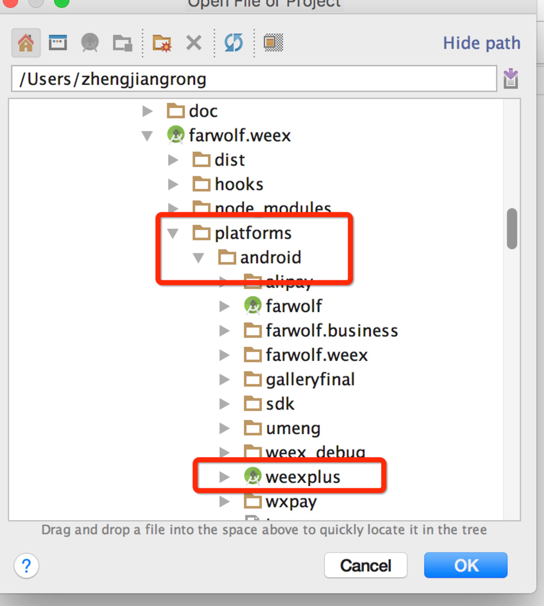
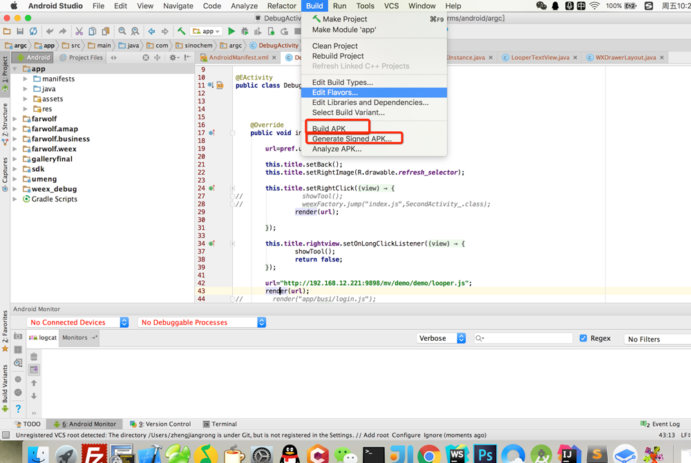

android 打包
1.请确认npm run weexplus 正在运行
2.修改src/config.json debug=false 关闭debug模式 此时会自动同步到原生项目目录中去
3.在项目根目录运行weexplus install
4.使用android studio 打包,不会请百度
使用android studio打开android的原生项目

build->build apk（打debug版本的包） 或者 build->Generate Signed Apk (打正式版本的包，会需要你提供签名文件，按提示操作就好)
